library(tidyverse) # installs sweeps of packages
library(sf) # working with sf objects in R
library(terra) # working with rasters in R (replaces raster/rgdal)
library(tidyterra) # ggplot2 integration for terra objects
library(marmap) # access global topography dataRasters
Getting started
Packages needed for this tutorial:
Note
This chapter uses terra, which replaced the older raster and rgdal packages. The API is similar – differences are noted throughout. For the full background, see the Spatial data concepts chapter.
Raster data model
The raster data model was introduced in the Spatial data concepts chapter. As a brief recap: raster data represents continuous fields as a regular grid of equally-sized cells. Each cell holds one or more values, and the grid is defined by its extent, resolution, and origin. The coordinate reference system is a fourth required property.
Note
If you need to revisit the conceptual background — the difference between continuous and categorical rasters, multi-layer rasters, or irregular grid types — see the Spatial data concepts section.
Raster classes in R
The terra package provides a single class, SpatRaster, which handles both single-layer and multi-layer rasters. This replaces the three separate classes of the old raster package (RasterLayer, RasterBrick, RasterStack).
For vector data, terra provides the SpatVector class, though in this course we mainly use sf objects for vector data. The two are interoperable: vect() converts an sf object to a SpatVector, and st_as_sf() goes the other direction.
Reading rasters into R
There are many different formats for raster data. The terra package uses the external library GDAL to read them. You can get the list of all possible formats here:
- https://gdal.org/drivers/raster/index.html
GeoTIFF (.tif or .tiff) and ASCII grid (.asc) are two of the most common formats.
Reading rasters with terra uses the rast() function. Let’s try it with a raster with bottom temperature around Iceland. These were compiled using data from NISE (Norwegian Iceland Seas Experiment) project.
# Minimum temperature
mintemp <- rast("./data/Iceland_minbtemp.tif")
# Maximum temperature
maxtemp <- rast("./data/Iceland_maxbtemp.tif")
# And a bit of data off the Faroe Islands
far_temp <- rast("./data/Faroes_minbtemp.tif")
# Multi-layer rasters: pass a vector of paths, or use c()
files <- c("./data/Iceland_minbtemp.tif",
"./data/Iceland_maxbtemp.tif")
temps <- rast(files)
class(mintemp) # SpatRaster[1] "SpatRaster"
attr(,"package")
[1] "terra"nlyr(mintemp) # number of layers (replaces nlayers())[1] 1class(temps)[1] "SpatRaster"
attr(,"package")
[1] "terra"nlyr(temps)[1] 2names(temps) # By default the name of the files[1] "Iceland_minbtemp" "Iceland_maxbtemp"We can do a quick plot using terra’s built-in plot method.
plot(mintemp)plot(temps)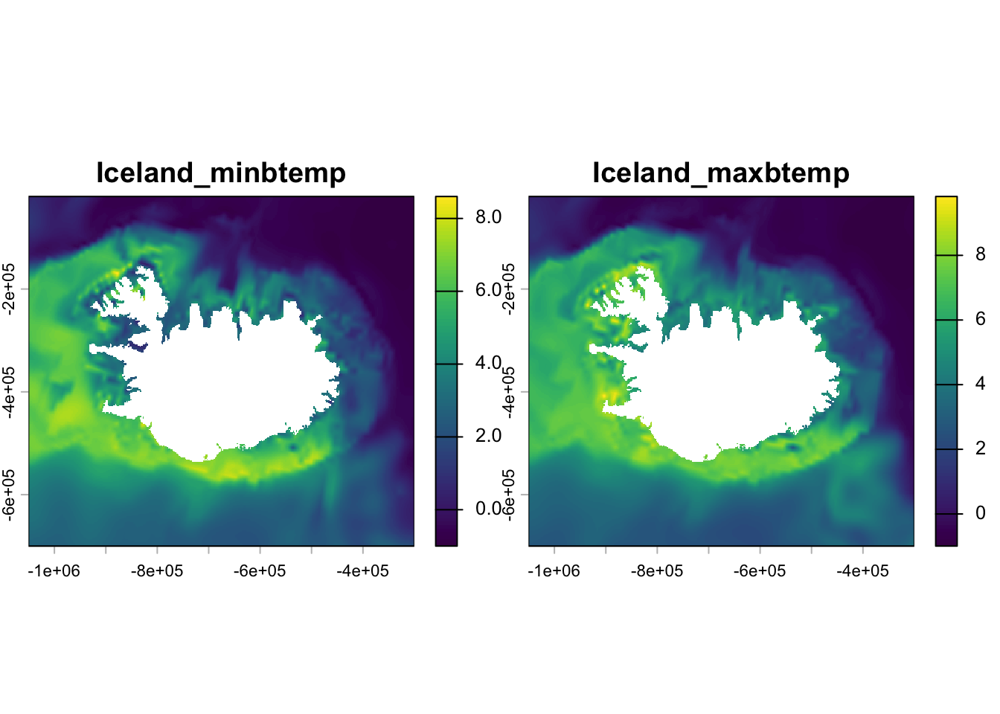
Raster metadata
Printing a SpatRaster shows its metadata, including dimensions, resolution, extent, coordinate reference system, and value range.
To get the metadata directly from the file without fully reading it into memory, use describe():
describe("./data/Iceland_minbtemp.tif") [1] "Driver: GTiff/GeoTIFF"
[2] "Files: /Users/julian/Documents/ICES/TCMSAR26/data/Iceland_minbtemp.tif"
[3] "Size is 375, 340"
[4] "Coordinate System is:"
[5] "PROJCRS[\"unnamed\","
[6] " BASEGEOGCRS[\"WGS 84\","
[7] " DATUM[\"World Geodetic System 1984\","
[8] " ELLIPSOID[\"WGS 84\",6378137,298.257223563,"
[9] " LENGTHUNIT[\"metre\",1]]],"
[10] " PRIMEM[\"Greenwich\",0,"
[11] " ANGLEUNIT[\"degree\",0.0174532925199433]],"
[12] " ID[\"EPSG\",4326]],"
[13] " CONVERSION[\"Lambert Azimuthal Equal Area\","
[14] " METHOD[\"Lambert Azimuthal Equal Area\","
[15] " ID[\"EPSG\",9820]],"
[16] " PARAMETER[\"Latitude of natural origin\",69,"
[17] " ANGLEUNIT[\"degree\",0.0174532925199433],"
[18] " ID[\"EPSG\",8801]],"
[19] " PARAMETER[\"Longitude of natural origin\",-4,"
[20] " ANGLEUNIT[\"degree\",0.0174532925199433],"
[21] " ID[\"EPSG\",8802]],"
[22] " PARAMETER[\"False easting\",0,"
[23] " LENGTHUNIT[\"metre\",1],"
[24] " ID[\"EPSG\",8806]],"
[25] " PARAMETER[\"False northing\",0,"
[26] " LENGTHUNIT[\"metre\",1],"
[27] " ID[\"EPSG\",8807]]],"
[28] " CS[Cartesian,2],"
[29] " AXIS[\"(E)\",east,"
[30] " ORDER[1],"
[31] " LENGTHUNIT[\"metre\",1]],"
[32] " AXIS[\"(N)\",north,"
[33] " ORDER[2],"
[34] " LENGTHUNIT[\"metre\",1]]]"
[35] "Data axis to CRS axis mapping: 1,2"
[36] "Origin = (-1050225.895722460001707,-19984.321105740033090)"
[37] "Pixel Size = (2000.000000000000000,-2000.000000000000000)"
[38] "Metadata:"
[39] " AREA_OR_POINT=Area"
[40] "Image Structure Metadata:"
[41] " COMPRESSION=LZW"
[42] " INTERLEAVE=BAND"
[43] "Corner Coordinates:"
[44] "Upper Left (-1050225.896, -19984.321) ( 28d39'33.25\"W, 66d54'27.90\"N)"
[45] "Lower Left (-1050225.896, -699984.321) ( 23d49'58.88\"W, 61d12' 1.05\"N)"
[46] "Upper Right ( -300225.896, -19984.321) ( 11d24'28.06\"W, 68d39'30.30\"N)"
[47] "Lower Right ( -300225.896, -699984.321) ( 9d50'37.32\"W, 62d35'32.83\"N)"
[48] "Center ( -675225.896, -359984.321) ( 18d28'23.04\"W, 65d 3'32.61\"N)"
[49] "Band 1 Block=375x5 Type=Float32, ColorInterp=Gray"
[50] " Description = Iceland_minbtemp"
[51] " Min=-0.998 Max=8.603 "
[52] " Minimum=-0.998, Maximum=8.603, Mean=-9999.000, StdDev=-9999.000"
[53] " NoData Value=nan"
[54] " Metadata:"
[55] " STATISTICS_MAXIMUM=8.6031131744385"
[56] " STATISTICS_MEAN=-9999"
[57] " STATISTICS_MINIMUM=-0.99828791618347"
[58] " STATISTICS_STDDEV=-9999" The coordinate reference system can be extracted (and set) with crs():
crs(mintemp)[1] "PROJCRS[\"unnamed\",\n BASEGEOGCRS[\"WGS 84\",\n DATUM[\"World Geodetic System 1984\",\n ELLIPSOID[\"WGS 84\",6378137,298.257223563,\n LENGTHUNIT[\"metre\",1]]],\n PRIMEM[\"Greenwich\",0,\n ANGLEUNIT[\"degree\",0.0174532925199433]],\n ID[\"EPSG\",4326]],\n CONVERSION[\"Lambert Azimuthal Equal Area\",\n METHOD[\"Lambert Azimuthal Equal Area\",\n ID[\"EPSG\",9820]],\n PARAMETER[\"Latitude of natural origin\",69,\n ANGLEUNIT[\"degree\",0.0174532925199433],\n ID[\"EPSG\",8801]],\n PARAMETER[\"Longitude of natural origin\",-4,\n ANGLEUNIT[\"degree\",0.0174532925199433],\n ID[\"EPSG\",8802]],\n PARAMETER[\"False easting\",0,\n LENGTHUNIT[\"metre\",1],\n ID[\"EPSG\",8806]],\n PARAMETER[\"False northing\",0,\n LENGTHUNIT[\"metre\",1],\n ID[\"EPSG\",8807]]],\n CS[Cartesian,2],\n AXIS[\"(E)\",east,\n ORDER[1],\n LENGTHUNIT[\"metre\",1]],\n AXIS[\"(N)\",north,\n ORDER[2],\n LENGTHUNIT[\"metre\",1]]]"The ext() function provides an object of class SpatExtent with the ranges of the horizontal and vertical coordinates:
ext(mintemp) # replaces extent()SpatExtent : -1050225.89572246, -300225.89572246, -699984.32110574, -19984.32110574 (xmin, xmax, ymin, ymax)st_bbox(mintemp) # an bbox object compatible with sf xmin ymin xmax ymax
-1050225.90 -699984.32 -300225.90 -19984.32 Summary statistics
The function global() computes summary statistics of a SpatRaster object. This replaces cellStats() from the old raster package.
global(mintemp, mean, na.rm = TRUE) mean
Iceland_minbtemp 2.672053global(temps, mean, na.rm = TRUE) mean
Iceland_minbtemp 2.672053
Iceland_maxbtemp 3.320894summary(mintemp) Iceland_minbtemp
Min. :-0.9983
1st Qu.: 0.2705
Median : 2.6790
Mean : 2.6713
3rd Qu.: 4.5784
Max. : 8.6031
NAs :19742 hist(mintemp)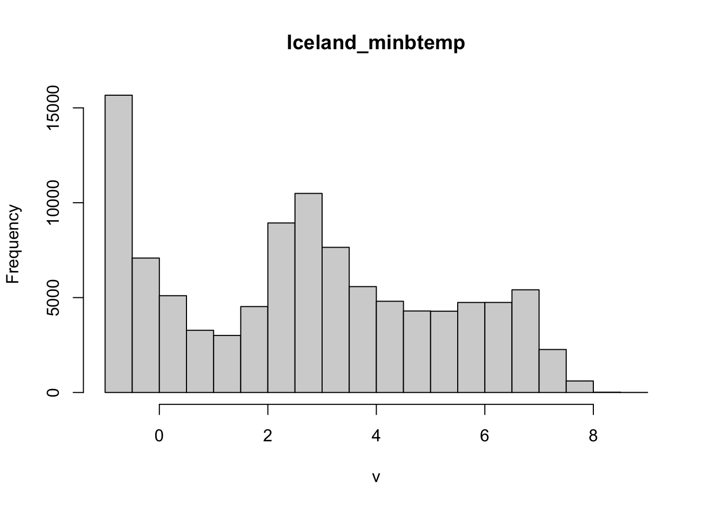
Rasters with categorical (factor) data
SpatRaster objects can store logical, integer, continuous or categorical data.
# Create classification matrix
cm <- matrix(c(
-2, 2, 1,
2, 4, 2,
4, 10, 3),
ncol = 3, byrow = TRUE)
# Reclassify: replaces reclassify()
temp_reclass <- classify(mintemp, cm)
is.factor(temp_reclass)[1] FALSEplot(temp_reclass)
# Make a factor raster
temp_factor <- as.factor(temp_reclass)
is.factor(temp_factor)[1] TRUE# Add category labels to the raster attribute table
levels(temp_factor) <- data.frame(ID = 1:3,
category = c("cold", "mild", "warm"))
plot(temp_factor)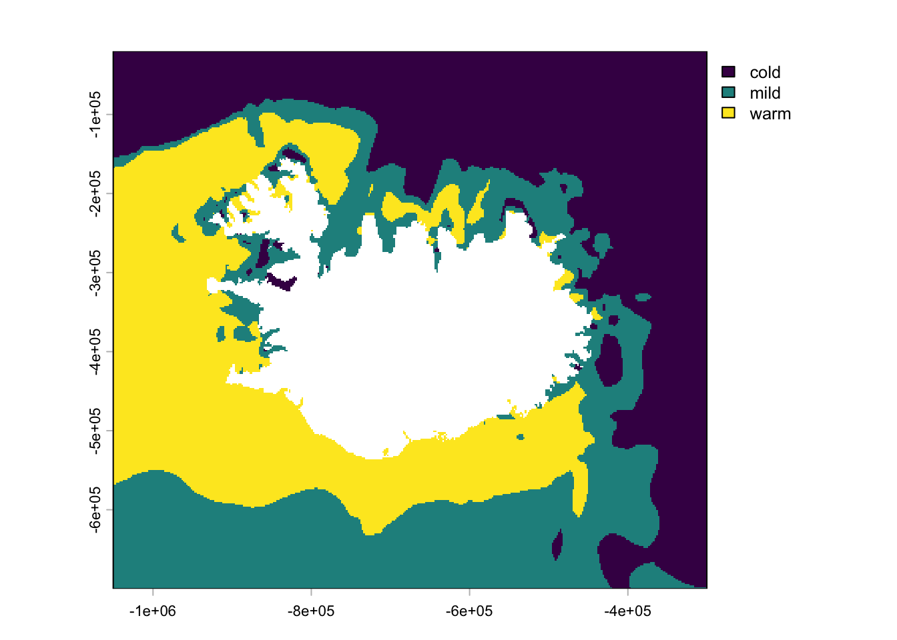
With tidyterra we can plot categorical rasters with ggplot naturally:
ggplot() +
geom_spatraster(data = temp_factor) +
scale_fill_manual(values = c("blue", "lightblue", "red"),
na.value = "transparent",
name = "Category") 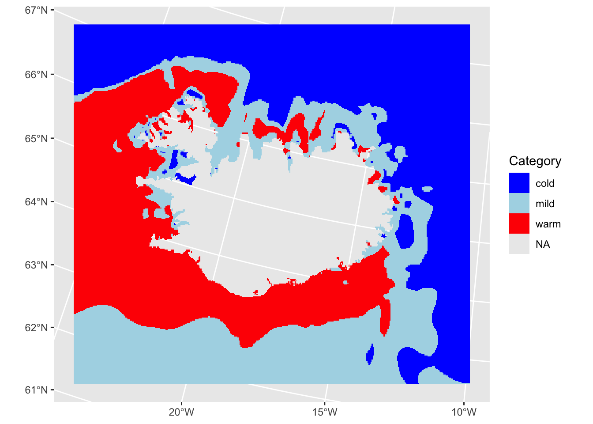
Manipulation of raster objects
Extracting values from a raster
To extract values from a SpatRaster, we use the bracket [ operator or the extract() function. Note that the terra extract() lives in the terra namespace, so if tidyverse is also loaded you may need to call it explicitly as terra::extract().
mintemp[239] # Cell ID = 239 Iceland_minbtemp
1 -0.4235116mintemp[20, 50] # Row 20, column 50 Iceland_minbtemp
1 0.2513673# Same as...
cell <- cellFromRowCol(mintemp, 20, 50)
mintemp[cell] Iceland_minbtemp
1 0.2513673mintemp[20:25, 50:55] # Submatrix Iceland_minbtemp
1 0.251367331
2 0.197344482
3 0.129703626
4 0.059670381
5 -0.012719928
6 -0.086739257
7 0.236171514
8 0.177205890
9 0.112170070
10 0.044947170
11 -0.024629701
12 -0.094837427
13 0.222400844
14 0.161106348
15 0.097580016
16 0.032607112
17 -0.034178130
18 -0.102023244
19 0.207514465
20 0.147138044
21 0.085331626
22 0.022095216
23 -0.042773183
24 -0.109881550
25 0.193299651
26 0.134642586
27 0.074557401
28 0.013044102
29 -0.051073473
30 -0.118012875
31 0.180556059
32 0.123616993
33 0.065251671
34 0.005331486
35 -0.059210896
36 -0.125822097# With drop = FALSE we get a new SpatRaster instead of a vector
rst <- mintemp[20:25, 50:55, drop = FALSE]
plot(rst)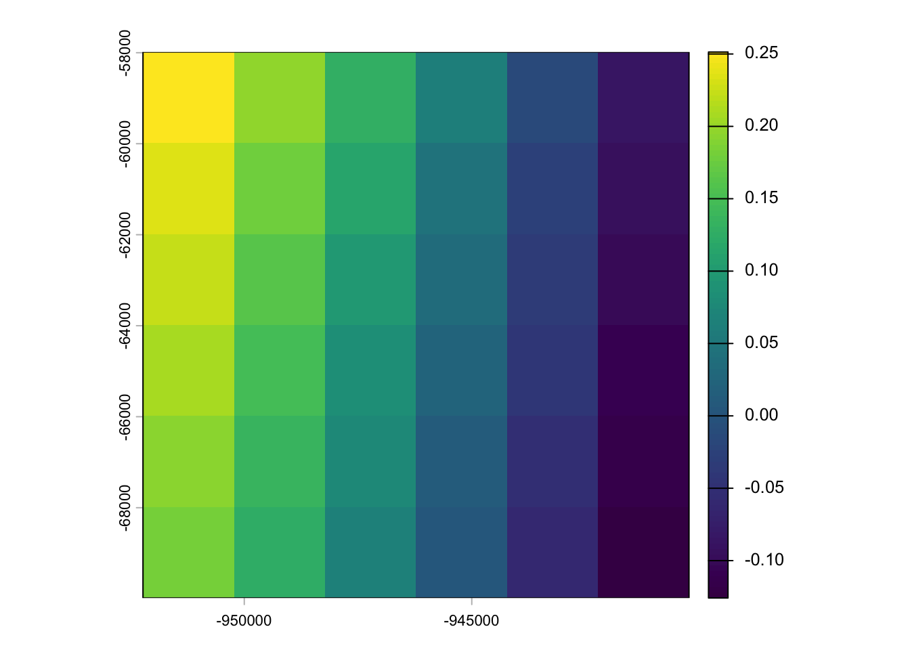
# Crop using an extent object
ext_obj <- ext(c(-944011, -784505, -278260, -160260))
rst <- crop(mintemp, ext_obj)
plot(rst)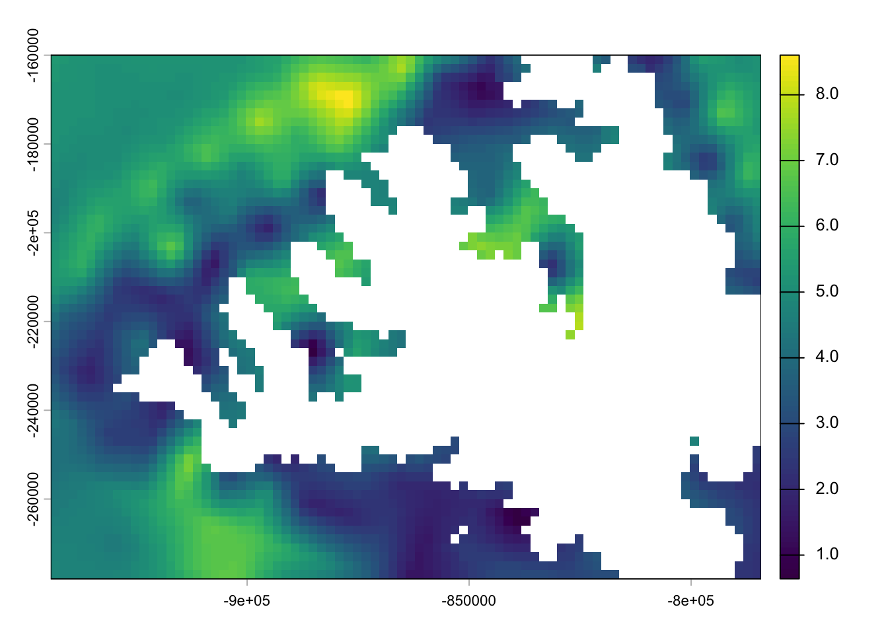
Replacing values
rst <- mintemp[20:25, 50:55, drop = FALSE]
rst[4, 2] <- rst[4, 2] + 30
rst[1:2] <- rst[1:2] + 10
plot(rst)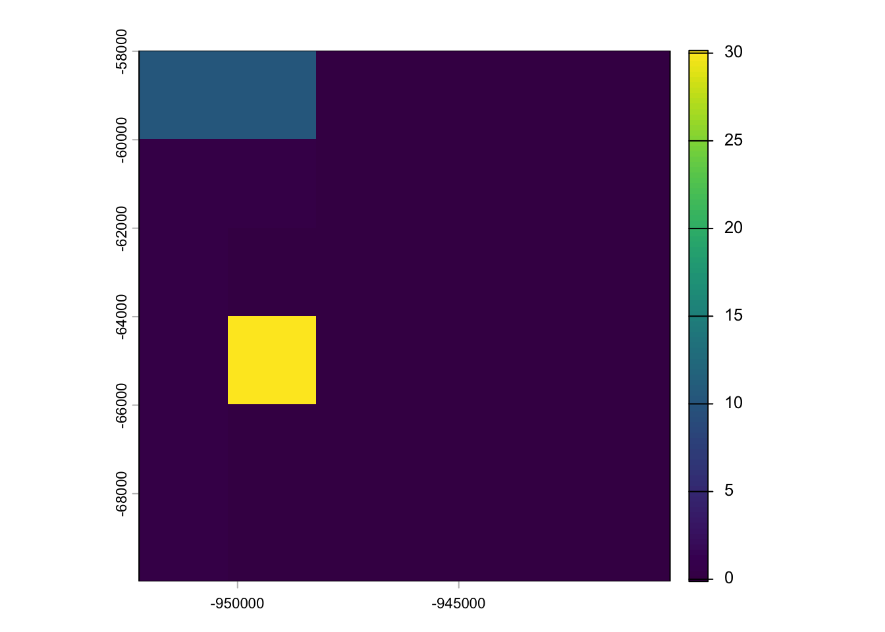
Masks
We can mask a raster with another raster that shares the same geometry. Cells with NA values in the mask are removed from the masked raster.
rst <- mintemp[100:135, 50:85, drop = FALSE]
# Create an empty raster with the same geometry
my.mask <- rast(rst)
values(my.mask) <- 1 # Non-NA everywhere
set.seed(100)
cells <- sample(1:ncell(my.mask), 20)
my.mask[cells] <- NA
rst_masked <- mask(rst, my.mask)
par(mfrow = c(1, 2))
plot(rst)
plot(rst_masked)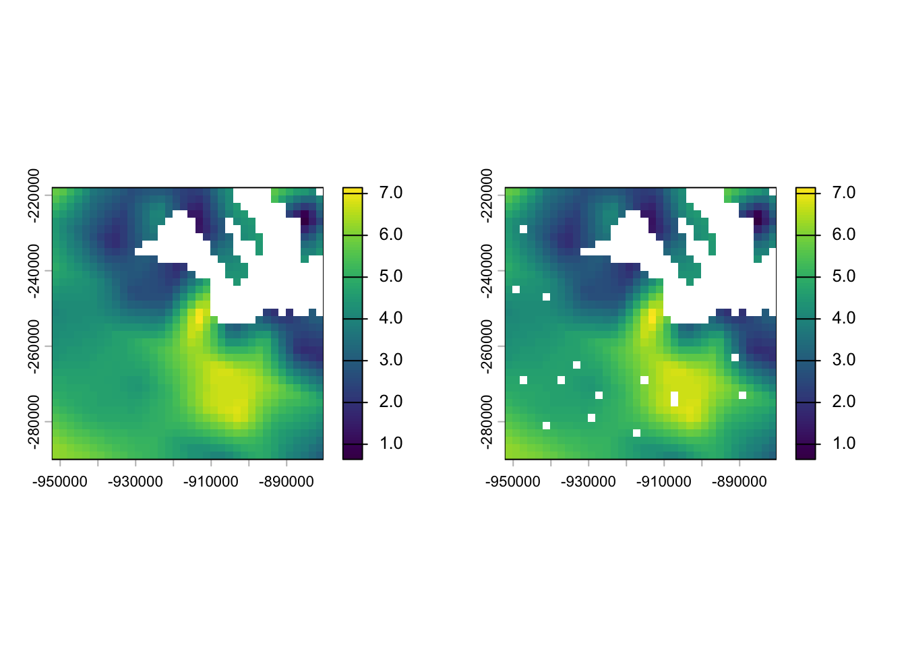
Extracting raster data with sf objects
bt_points <- read_sf("./data/ice_points.gpkg")
bt_lines <- read_sf("./data/ice_lines.gpkg")
bt_poly <- read_sf("./data/ice_polygon.gpkg")
plot(mintemp)
plot(vect(bt_points), add = TRUE)
plot(vect(bt_lines), add = TRUE)
plot(vect(bt_poly), add = TRUE)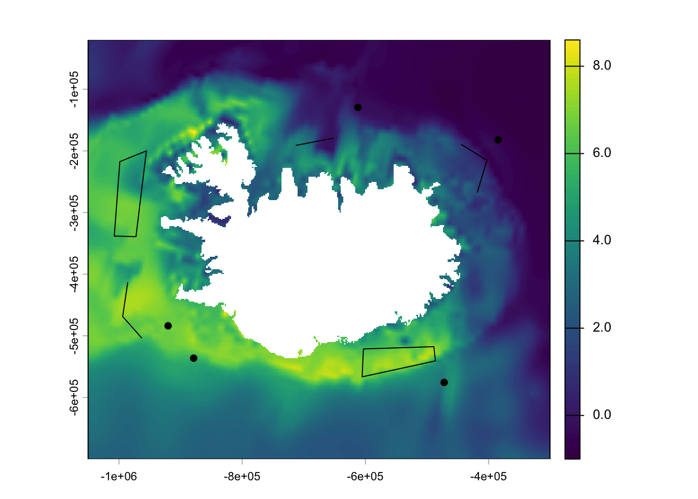
We use terra::extract() to extract raster values using sf objects (converted to SpatVector with vect()):
- For POINT geometry: values of the cells where the points are located.
- For LINESTRING geometry: values of the cells touched by the line.
- For POLYGON geometry: values of the cells whose centres fall within the polygon.
ex1 <- terra::extract(mintemp, vect(bt_points)) # data frame, one row per point
ex2 <- terra::extract(mintemp, vect(bt_lines)) # data frame, one row per cell touched
ex3 <- terra::extract(mintemp, vect(bt_poly)) # data frame, one row per cell
# With cell numbers
ex3_cells <- terra::extract(mintemp, vect(bt_poly), cells = TRUE)We can also use an sf object as a cookie cutter to mask a raster with mask(). Make sure that they share the same CRS.
temp_masked <- mask(mintemp, vect(bt_poly))
temp_masked_inv <- mask(mintemp, vect(bt_poly), inverse = TRUE)
par(mfrow = c(1, 2))
plot(temp_masked)
plot(temp_masked_inv)
Raster algebra
Rasters are a very efficient way to do mathematical operations on spatial data, because the cell coordinates do not need to be handled explicitly.
tempkelv <- mintemp + 273
tempsq <- mintemp ^ 2
tempdiff <- maxtemp - mintemp
par(mfrow = c(1, 2))
plot(mintemp)
plot(tempkelv)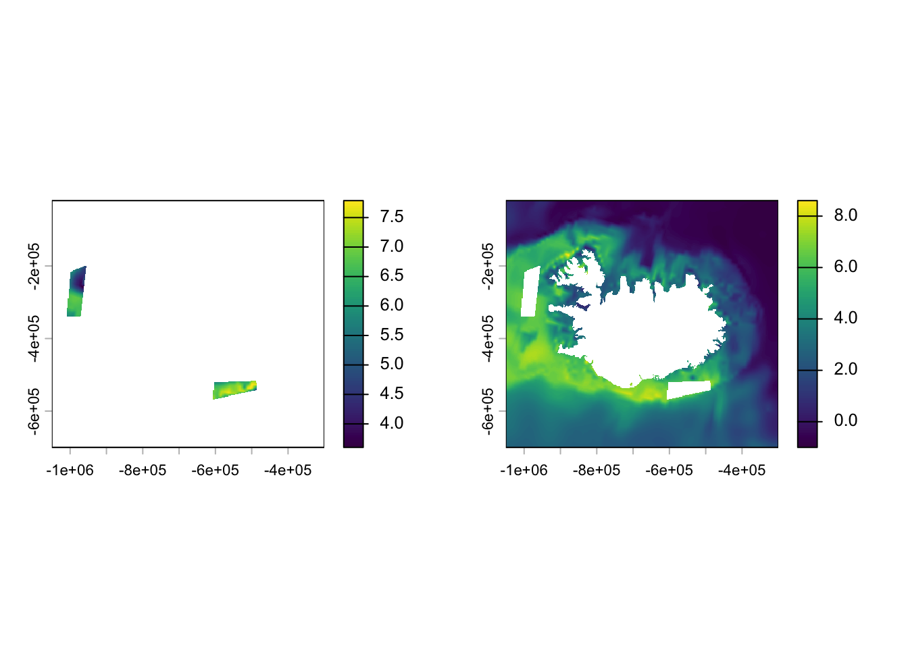
plot(tempsq)
plot(tempdiff)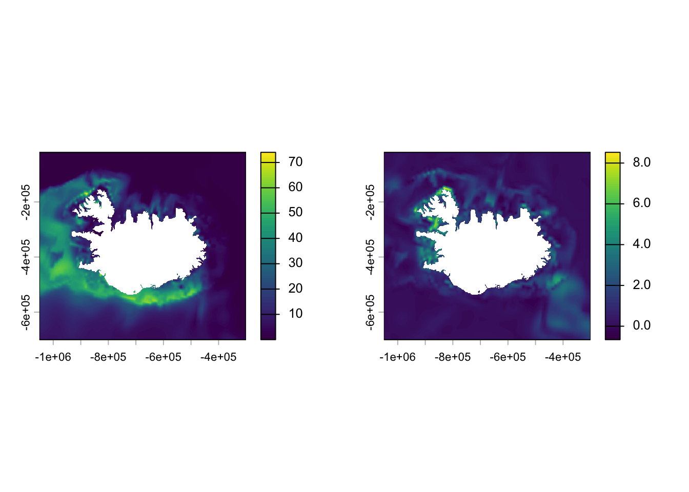
For applying a custom function across layers, use app() (which replaces calc() from the old raster package):
# Mean across layers
temp_mean <- app(temps, mean)
plot(temp_mean)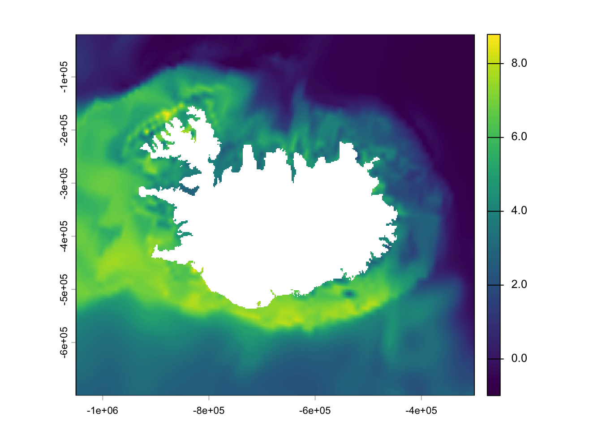
Moving window operations
A moving window operation (also known as a kernel) is a computation carried out in each cell using values of adjacent cells.
Let’s calculate the variability of bottom depth using two window sizes.
# Get depth data
xlim <- c(-28, -10)
ylim <- c(62.5, 67.5)
depth <-
getNOAA.bathy(lon1 = xlim[1], lon2 = xlim[2],
lat1 = ylim[1], lat2 = ylim[2],
resolution = 1, keep = TRUE) |>
marmap::as.raster() |> # marmap still returns a raster object
rast() # convert to terra SpatRaster
writeRaster(depth, "./data/Iceland_depth.tif", overwrite = TRUE)
depth[depth > 0] <- NA # Ignore land
# Small scale depth variability: 3x3 window
depth_var_ss <- focal(depth,
w = matrix(1/9, nrow = 3),
fun = var,
na.rm = TRUE)
# Large scale depth variability: 15x15 window
depth_var_ls <- focal(depth,
w = matrix(1/225, nrow = 15),
fun = var,
na.rm = TRUE)
par(mfrow = c(1, 2))
plot(depth_var_ss, zlim = c(0, 1000))
plot(depth_var_ls)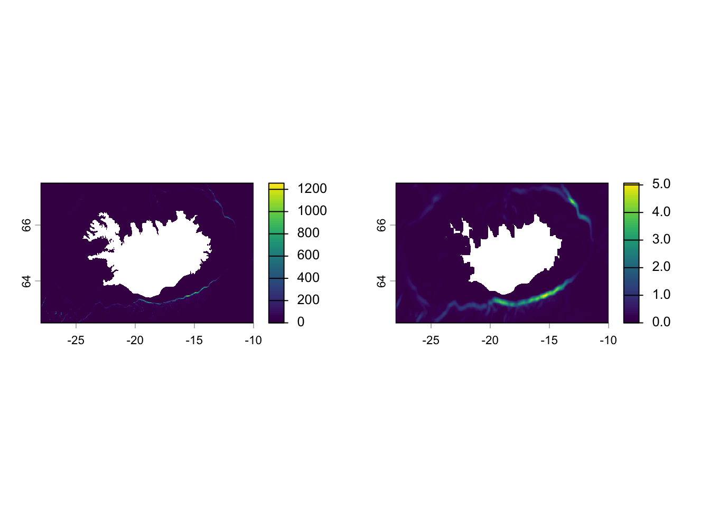
Zonal statistics
Zonal statistics refers to the calculation of statistics on values of a raster within the zones of another raster. Both rasters need to have the same geometry.
# Near-bottom current speeds
current_sp <- rast("./data/Iceland_currentsp.tif")
# Classification matrix
cm <- matrix(c(
-400, 0, 1,
-700, -400, 2,
-2500, -700, 3),
ncol = 3, byrow = TRUE)
depth_reclass <- classify(depth, cm)
# Make sure rasters have the same geometry
compareGeom(depth, current_sp)[1] TRUE# Mean current speed per depth zone (replaces zonal())
zonal(current_sp, depth_reclass, fun = mean, na.rm = TRUE) layer Iceland_currentsp
1 1 0.05107170
2 2 0.08771757
3 3 0.06289445Changing the geometry of a raster
Modify the extent and origin
ex_depth <- extend(depth, c(40, 500)) # Larger extent
or_depth <- depth
origin(or_depth) <- c(0, 0) # Change origin
ext(depth)SpatExtent : -28, -10, 62.5, 67.5 (xmin, xmax, ymin, ymax)ext(or_depth)SpatExtent : -28, -10, 62.5, 67.5 (xmin, xmax, ymin, ymax)Changing the resolution
aggregate() and disagg() change the resolution by merging or splitting cells. Note: in terra, disaggregate() is renamed disagg().
res(depth) # Resolution[1] 0.01666667 0.01666667dim(depth) # Rows, columns, layers[1] 300 1080 1agg_depth <- aggregate(depth, fact = 5, fun = mean)
dim(agg_depth)[1] 60 216 1dis_depth <- disagg(depth, fact = 5, method = "bilinear")
dim(dis_depth)[1] 1500 5400 1plot(depth)plot(agg_depth)plot(dis_depth)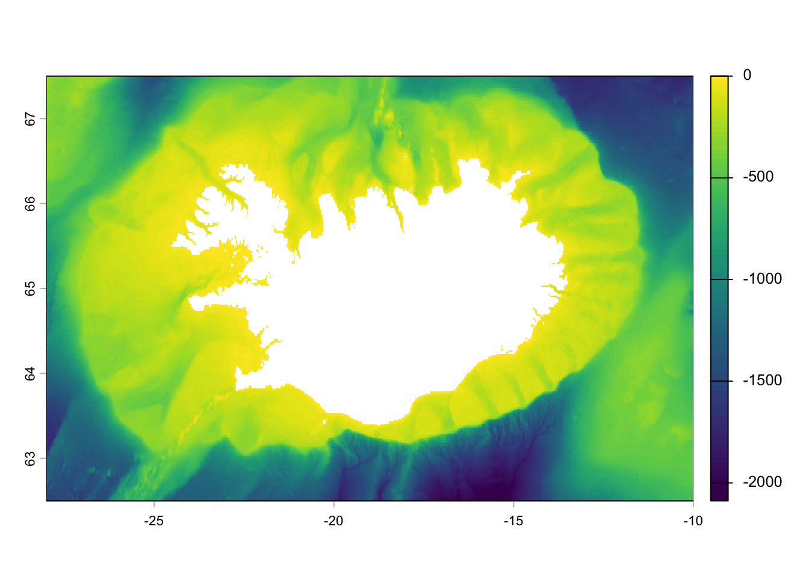
Cropping
ext_obj <- ext(c(-25, -20, 63, 65))
crop_depth <- crop(depth, ext_obj)
plot(crop_depth)
Merging rasters
ice_temp <- mintemp + 10
# merge(): overlapping cells use values from the first raster
icefar_temp <- merge(ice_temp, far_temp)
plot(icefar_temp)# mosaic(): overlapping cells are combined using a function
icefar_temp2 <- mosaic(ice_temp, far_temp, fun = "mean")
plot(icefar_temp2)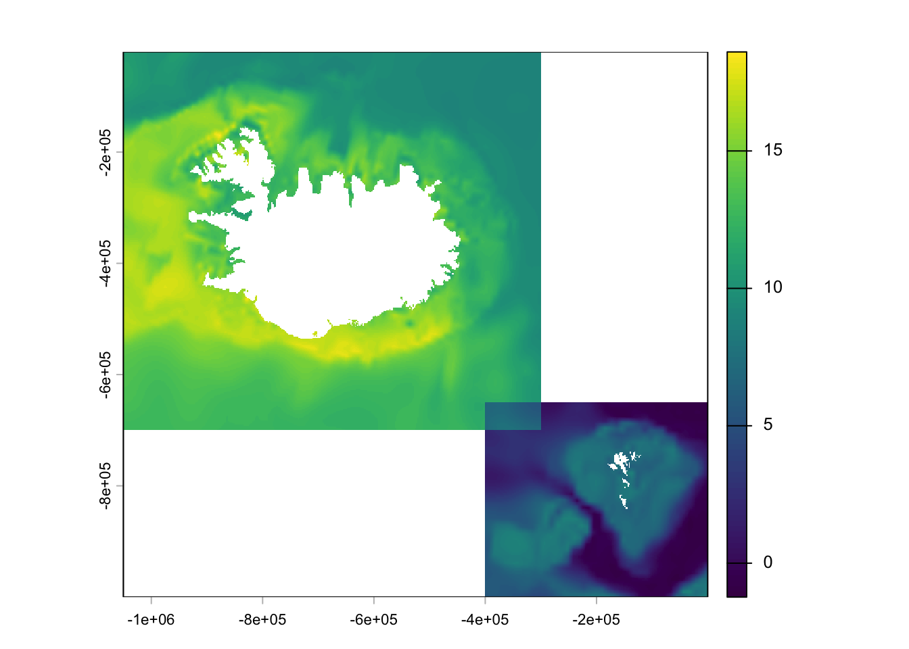
Resampling and projecting rasters
Resampling transfers values between rasters with different origin or resolution. Projecting additionally changes the coordinate reference system. In terra both are handled by resample() and project() (the latter replaces projectRaster()).
# Create a target raster with a shifted origin and finer resolution
target1 <- rast(depth)
origin(target1) <- c(0, 0)
res(target1) <- 0.025
depth_res <- resample(depth, target1, method = "bilinear")
# Changing the CRS (replaces projectRaster())
crs(depth)[1] "GEOGCRS[\"unknown\",\n DATUM[\"World Geodetic System 1984\",\n ELLIPSOID[\"WGS 84\",6378137,298.257223563,\n LENGTHUNIT[\"metre\",1]],\n ID[\"EPSG\",6326]],\n PRIMEM[\"Greenwich\",0,\n ANGLEUNIT[\"degree\",0.0174532925199433],\n ID[\"EPSG\",8901]],\n CS[ellipsoidal,2],\n AXIS[\"longitude\",east,\n ORDER[1],\n ANGLEUNIT[\"degree\",0.0174532925199433,\n ID[\"EPSG\",9122]]],\n AXIS[\"latitude\",north,\n ORDER[2],\n ANGLEUNIT[\"degree\",0.0174532925199433,\n ID[\"EPSG\",9122]]]]"crs(mintemp)[1] "PROJCRS[\"unnamed\",\n BASEGEOGCRS[\"WGS 84\",\n DATUM[\"World Geodetic System 1984\",\n ELLIPSOID[\"WGS 84\",6378137,298.257223563,\n LENGTHUNIT[\"metre\",1]]],\n PRIMEM[\"Greenwich\",0,\n ANGLEUNIT[\"degree\",0.0174532925199433]],\n ID[\"EPSG\",4326]],\n CONVERSION[\"Lambert Azimuthal Equal Area\",\n METHOD[\"Lambert Azimuthal Equal Area\",\n ID[\"EPSG\",9820]],\n PARAMETER[\"Latitude of natural origin\",69,\n ANGLEUNIT[\"degree\",0.0174532925199433],\n ID[\"EPSG\",8801]],\n PARAMETER[\"Longitude of natural origin\",-4,\n ANGLEUNIT[\"degree\",0.0174532925199433],\n ID[\"EPSG\",8802]],\n PARAMETER[\"False easting\",0,\n LENGTHUNIT[\"metre\",1],\n ID[\"EPSG\",8806]],\n PARAMETER[\"False northing\",0,\n LENGTHUNIT[\"metre\",1],\n ID[\"EPSG\",8807]]],\n CS[Cartesian,2],\n AXIS[\"(E)\",east,\n ORDER[1],\n LENGTHUNIT[\"metre\",1]],\n AXIS[\"(N)\",north,\n ORDER[2],\n LENGTHUNIT[\"metre\",1]]]"# Match only the CRS
depth_proj1 <- project(depth, crs(mintemp))
# Complete raster alignment (CRS + geometry)
depth_proj2 <- project(depth, mintemp)Use method = "bilinear" for continuous rasters and method = "near" (nearest neighbour) for categorical or integer rasters.
Rasterization
Rasterization converts vector data into a raster.
# A target raster from scratch
target <- rast(xmin = -28, xmax = -10,
ymin = 62.5, ymax = 67.5,
res = 0.2,
crs = "EPSG:4326")
stations <- read_csv("./data/is_smb_stations.csv") |>
st_as_sf(coords = c("lon1", "lat1"), crs = 4326)
# Rasterize: count of stations per cell
station_rst1 <- rasterize(vect(stations), target, fun = "count")
# Rasterize: sum of a field
station_rst2 <- rasterize(vect(stations), target,
field = "duration", fun = "sum")
par(mfrow = c(1, 2))
plot(station_rst1, main = "Number of stations")
plot(vect(stations), add = TRUE, pch = ".")
plot(station_rst2, main = "Total towing time")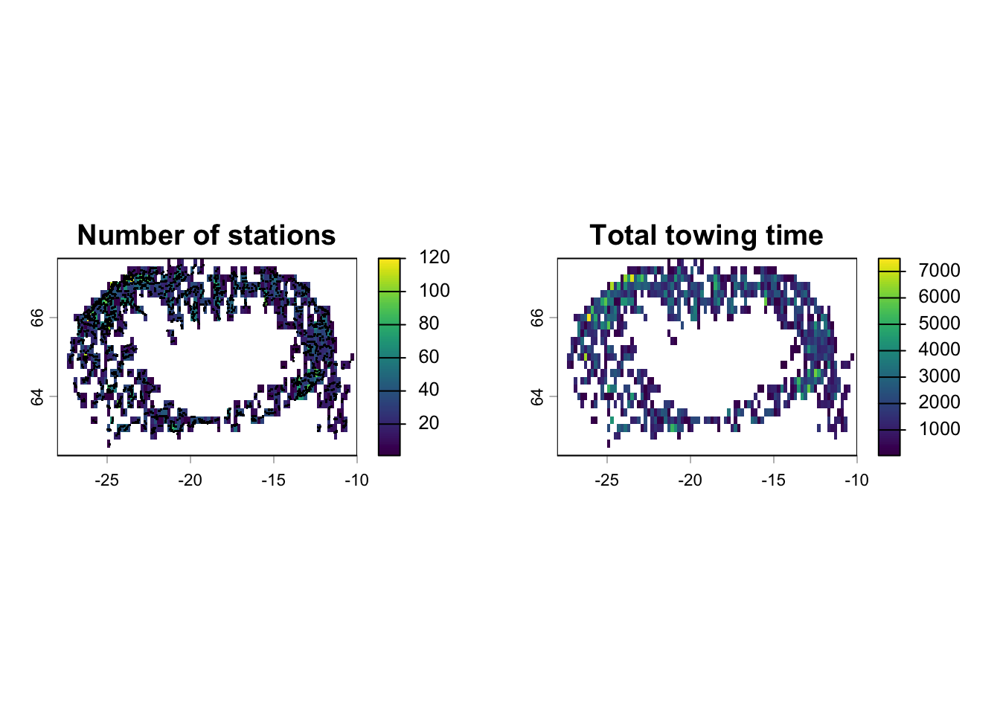
Rasterizing polygons:
nfu <- read_sf("./data/nephrops_fu.gpkg") %>% # Note the tidyverse pipe!
mutate(area = units::set_units(st_area(.), km^2))
target <- rast(xmin = -15, xmax = 13,
ymin = 36.5, ymax = 62,
res = 0.5,
crs = "EPSG:4326")
# Rasterize by presence/absence
nfu_rst <- rasterize(nfu, target)
# Rasterize by polygon name
nfu_names_rst <- rasterize(nfu, target, field="name")
# Rasterize by polygon area
nfu_areas_rst <- rasterize(nfu, target, field="area")
plot(nfu_rst)
plot(nfu_names_rst)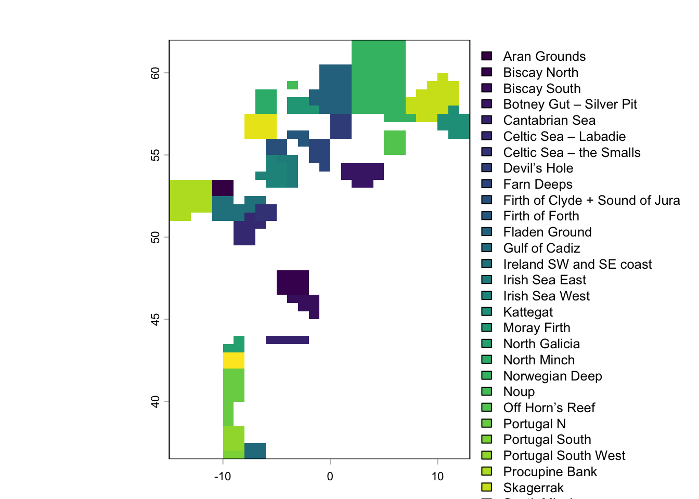
plot(nfu_areas_rst)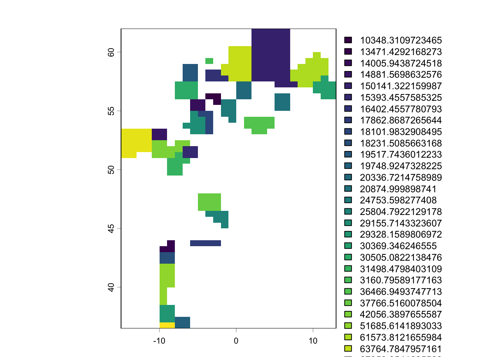
Rasters and ggplot
The tidyterra package provides geom_spatraster(), which lets you plot SpatRaster objects directly with ggplot without first converting them to a data frame. This is the recommended approach.
depth <- rast("./data/Iceland_depth.tif")
coast <- read_sf("./data/iceland_coastline.gpkg") |>
st_transform(4326)
ggplot() +
geom_spatraster(data = depth) +
geom_sf(data = coast) +
scale_fill_viridis_c(na.value = "transparent") +
theme_bw()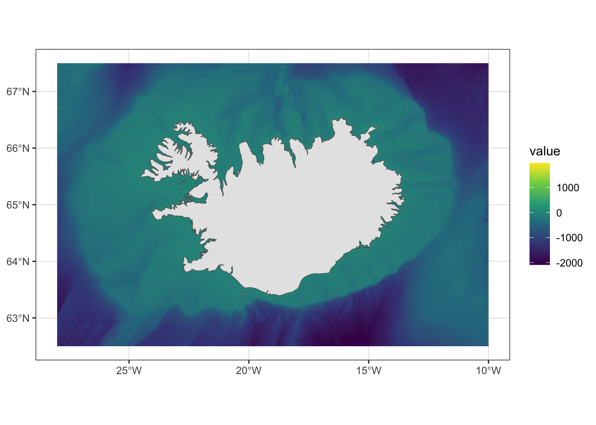
If you prefer to work with a data frame (for example to use geom_raster()), you can still convert:
depth.df <- as.data.frame(depth, xy = TRUE)
head(depth.df) x y layer
1 -27.99167 67.49167 -302.6884
2 -27.97500 67.49167 -304.0883
3 -27.95833 67.49167 -304.7184
4 -27.94167 67.49167 -303.7683
5 -27.92500 67.49167 -301.7484
6 -27.90833 67.49167 -304.7283ggplot() +
geom_raster(data = depth.df, aes(x = x, y = y, fill = layer)) +
geom_sf(data = coast) +
scale_fill_viridis_c(na.value = "transparent") +
theme_bw()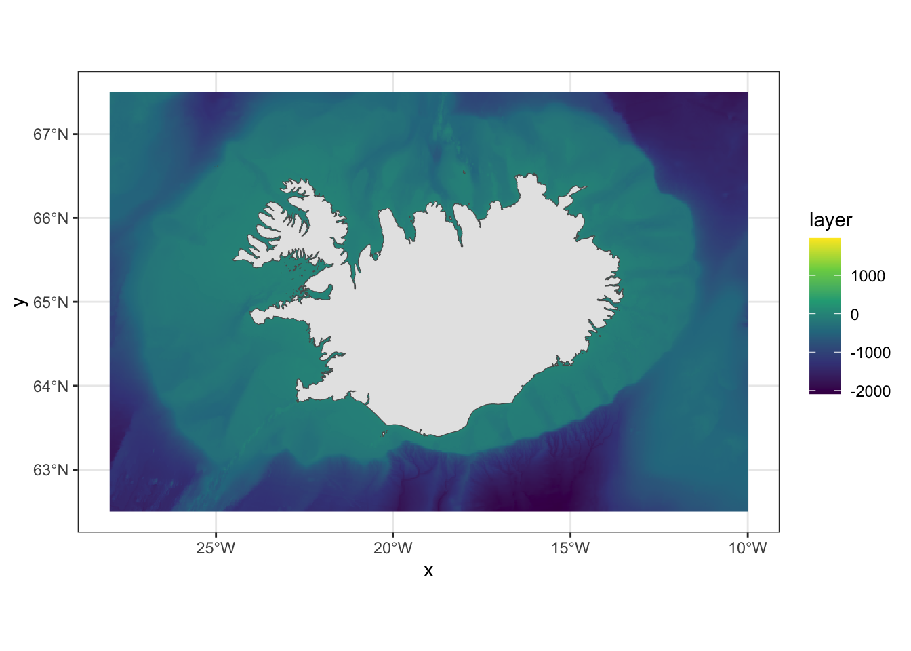
geom_spatraster() is generally preferable for large rasters because it sub-samples intelligently to match screen resolution, while geom_raster() will attempt to render every cell.
The stars package
The stars package provides datacubes — dense arrays for storing spatio-temporal data where space (2D or 3D) and time are the array dimensions. It is not a replacement for terra but complements it, and it plays well with the tidyverse.
library(stars)
depth.st <- st_as_stars(depth)
ggplot() +
geom_stars(data = depth.st) +
geom_sf(data = coast) +
scale_fill_viridis_c(na.value = "transparent")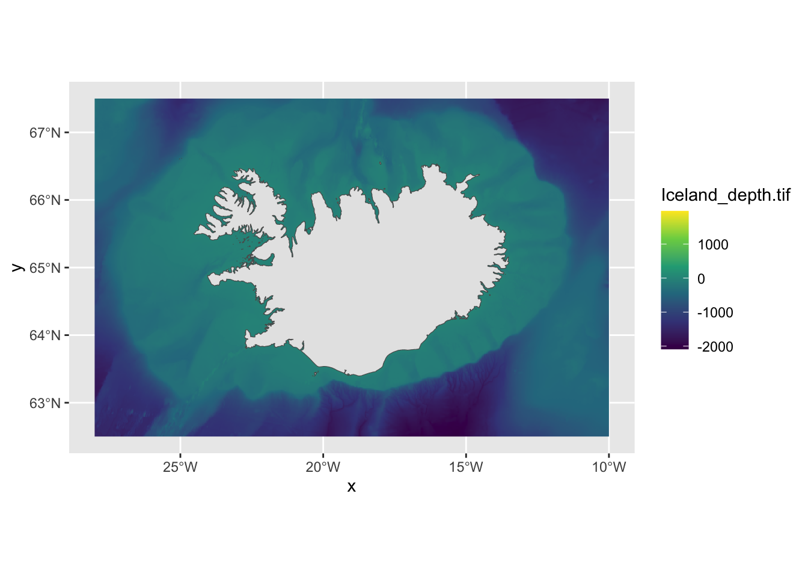
For more on stars: https://r-spatial.github.io/stars/